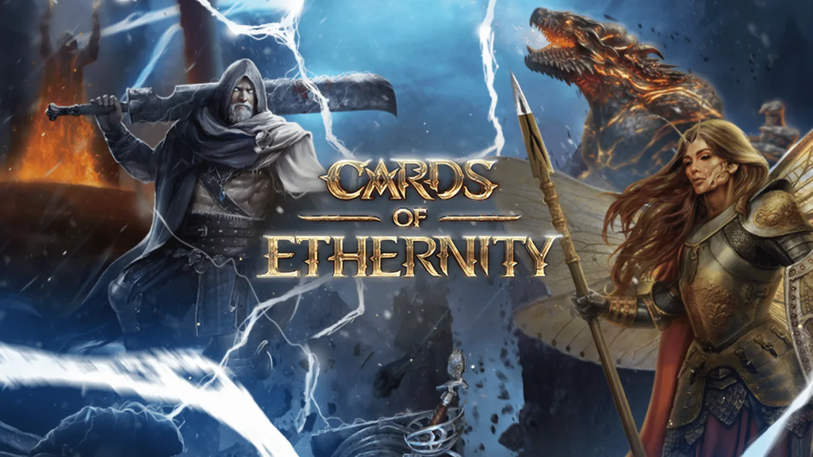

Games.gg
Aether Games interview: product vision and AR

Independent interview about a portfolio product and its market positioning.
My role
Head of PMO / Product Delivery at REDRIFT.
Open original ↗Games.gg

Independent interview about a portfolio product and its market positioning.
Head of PMO / Product Delivery at REDRIFT.
Open original ↗